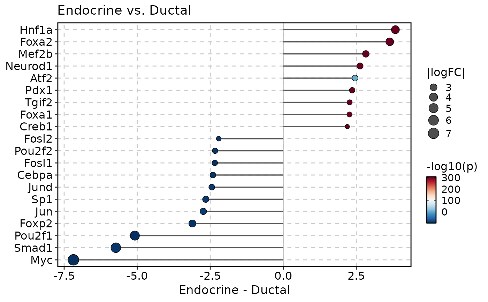
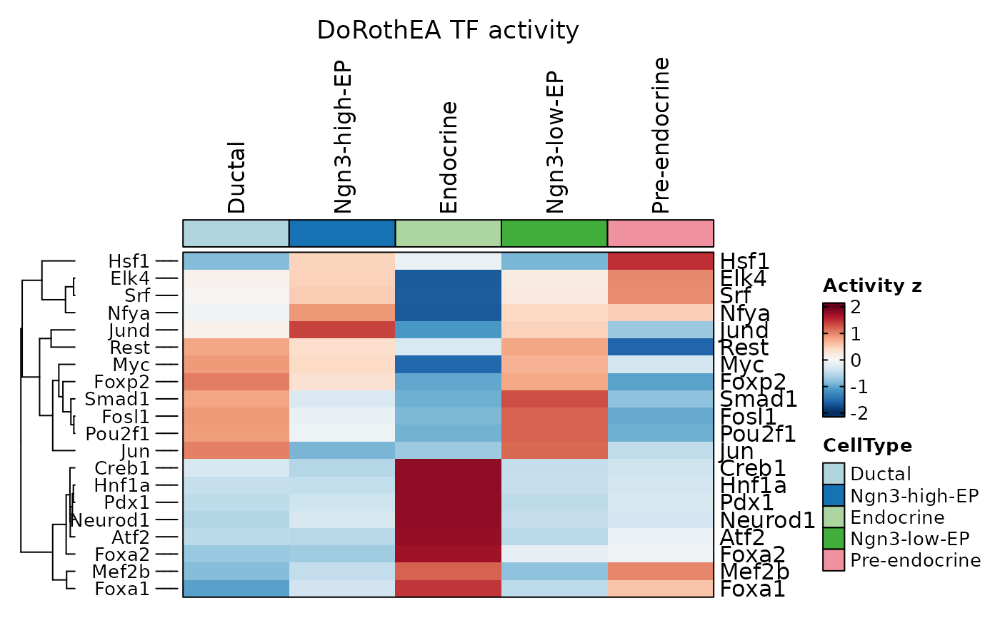
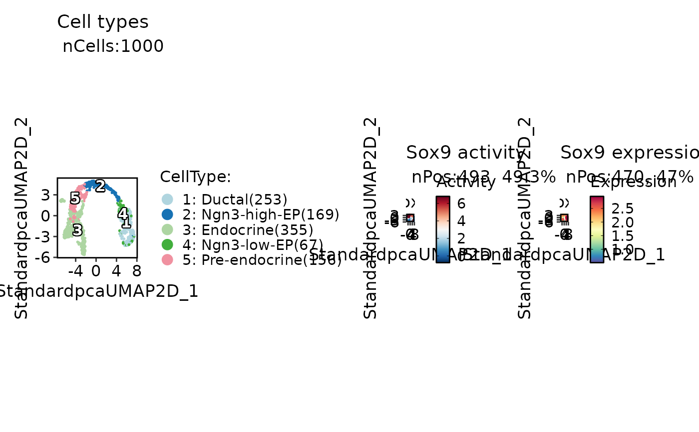
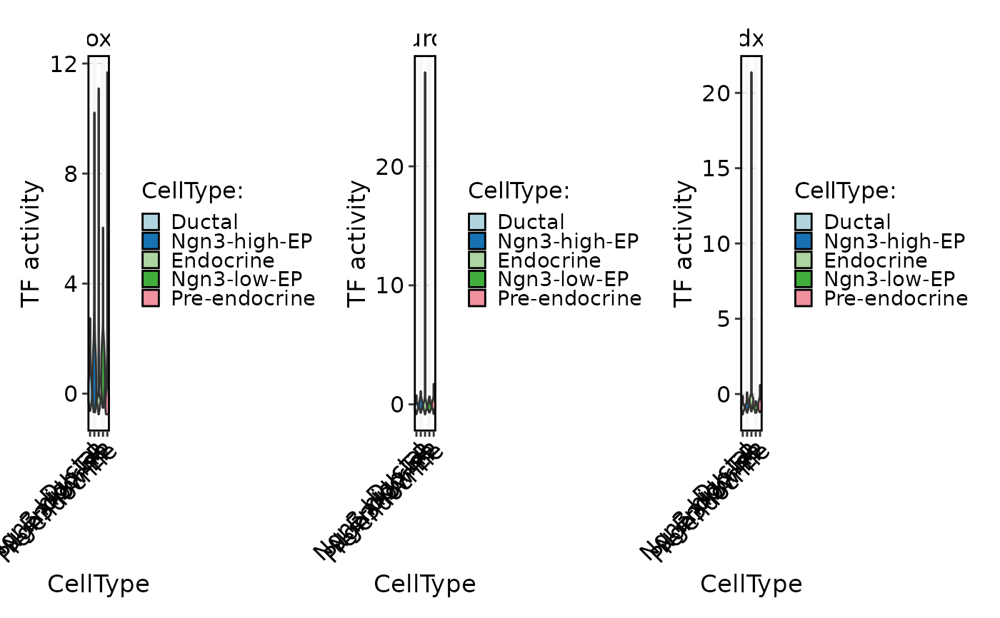
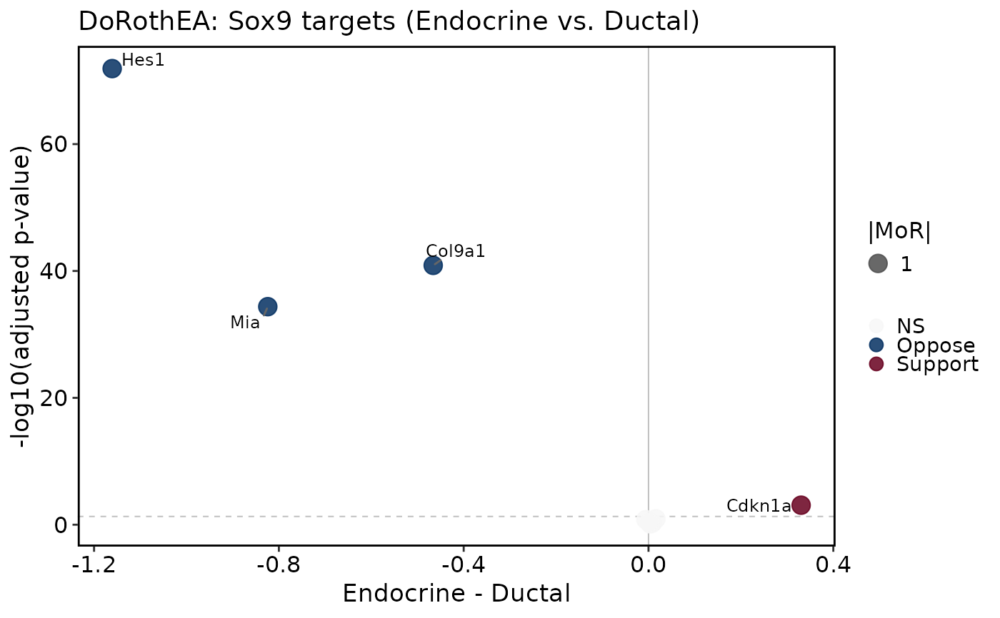

Visualize TF activity stored by RunDorothea(). Comparison plots
("bar", "lollipop", "volcano") test two groups and show the mean
activity difference group1 - group2. "heatmap" uses GroupHeatmap()
to summarize activity across all groups in group.by. "dim" compares TF
activity with TF expression on embeddings, "stat" draws per-group
activity distributions with FeatureStatPlot(), and "targets" shows a
regulon-target volcano for one TF.
Usage
DorotheaPlot(
srt,
group.by,
group1 = NULL,
group2 = NULL,
plot_type = c("bar", "lollipop", "heatmap", "volcano", "dim", "stat", "targets"),
tool_name = "Dorothea",
assay_name = NULL,
features = NULL,
top_n = 30,
test.use = c("wilcox.test", "t.test"),
p.adjust.method = "BH",
color.by = c("p_val", "p_val_adj"),
rank.by = c("abs_logFC", "p_val", "p_val_adj", "logFC"),
sort.by = c("logFC", "abs_logFC", "p_val", "p_val_adj"),
p_floor = .Machine$double.xmin,
padjustCutoff = 0.05,
palette = "RdBu",
palcolor = NULL,
heatmap_palette = "RdBu",
heatmap_palcolor = NULL,
group_palette = "Chinese",
group_palcolor = NULL,
exp_method = c("zscore", "raw"),
heatmap_args = list(),
dim_args = list(),
stat_args = list(),
compare_expression = TRUE,
expression_assay = NULL,
expression_layer = "data",
stat_plot_type = c("violin", "box", "dot", "bar", "col"),
nlabel = 10,
reduction = NULL,
bar_width = 0.72,
point_size = 3.2,
aspect.ratio = NULL,
legend.position = "right",
legend.direction = "vertical",
title = NULL,
xlab = NULL,
ylab = NULL,
fill.title = NULL,
flip = TRUE,
cols = NULL,
theme_use = "theme_scop",
theme_args = list(),
return_data = FALSE,
verbose = TRUE
)Arguments
- srt
A
Seuratobject containing results fromRunDorothea().- group.by
Metadata column used to define groups.
- group1, group2
Two group labels to compare. Required for
"bar","lollipop","volcano", and"targets". Positive logFC means higher TF activity (or target expression) ingroup1. Ignored for"heatmap","dim", and"stat".- plot_type
Plot type.
"bar"and"lollipop"show signed activity differences,"volcano"shows TF-level significance versus logFC,"heatmap"draws aGroupHeatmap()of TF activity,"dim"compares activity and expression on embeddings,"stat"draws activity distributions, and"targets"shows a regulon-target volcano.- tool_name
Name of the
srt@toolsentry created byRunDorothea().- assay_name
Assay used for
"heatmap","dim", and"stat". IfNULL, the assay stored byRunDorothea()is used, or"dorothea".- features
TFs to plot. If
NULL,"bar"/"lollipop"use the toptop_nTFs,"volcano"shows all tested TFs, heatmaps and"stat"use thetop_nmost variable TFs,"dim"uses TFs present in both activity and expression assays, and"targets"uses the TF with the largest absolute activity difference.- top_n
Number of TFs to show when
features = NULL. Ignored for"volcano", which always plots every tested TF. SetNULLto show all tested TFs in other comparison plots.- test.use
Statistical test used for each TF or target gene in comparison plots.
- p.adjust.method
Method passed to stats::p.adjust.
- color.by
P-value column used for comparison-plot color scales.
- rank.by
Metric used to select top TFs when
features = NULLin comparison plots.- sort.by
Metric used to order TFs in
"bar"and"lollipop"plots.- p_floor
Lower bound used before
-log10()transformation.- padjustCutoff
Adjusted p-value cutoff used to mark significant TFs in
"volcano"plots and non-supporting targets in"targets"plots.- palette, palcolor
Palette passed to
palette_colors()for comparison plots.- heatmap_palette, heatmap_palcolor
Palette passed to
GroupHeatmap()whenplot_type = "heatmap".- group_palette, group_palcolor
Group annotation palette passed to
GroupHeatmap()andFeatureStatPlot().- exp_method
Scaling method passed to
GroupHeatmap()forplot_type = "heatmap".- heatmap_args
Additional arguments passed to
GroupHeatmap().- dim_args
Additional arguments passed to
FeatureDimPlot()whenplot_type = "dim".- stat_args
Additional arguments passed to
FeatureStatPlot()whenplot_type = "stat".- compare_expression
Whether
"dim"also plots TF gene expression beside TF activity.- expression_assay, expression_layer
Assay and layer used for TF expression in
"dim"and for target genes in"targets".- stat_plot_type
Distribution plot type passed to
FeatureStatPlot()whenplot_type = "stat".- nlabel
Number of significant TFs labeled in
"volcano"plots, or significant target genes labeled in"targets"plots.- reduction
Reduction used by
"dim"plots. IfNULL, the default reduction ofsrtis used.- bar_width
Width of bars in
"bar"plots.- point_size
Point size in
"lollipop","volcano", and"targets"plots.- aspect.ratio
Panel aspect ratio.
- legend.position
Legend placement (
"none","left","right","bottom","top"), direction, and title.legend.title = NULLuses the group name.- legend.direction
Legend direction:
"horizontal"or"vertical".- title, xlab, ylab, fill.title
Axis, plot, and legend titles.
- flip
Whether to draw comparison bar/lollipop plots horizontally.
- cols
Optional three-color vector used instead of
palettefor diverging comparison scales. Kept for backward compatibility.- theme_use, theme_args
Theme name or function, plus extra theme arguments.
- return_data
Whether to return a list with the plot and statistics.
- verbose
Whether to print the message. Default is
TRUE.
Value
For "bar", "lollipop", "volcano", "dim", "stat", and
"targets", a ggplot or patchwork object, or a list with plot and
data when return_data = TRUE. For "heatmap", the list returned by
GroupHeatmap().
Examples
data(pancreas_sub)
pancreas_sub <- RunStandardWorkflow(pancreas_sub, verbose = FALSE)
#> ℹ [2026-09-05 15:55:06] Skip `log1p()` because `layer = data` is not "counts"
pancreas_sub <- RunDorothea(
pancreas_sub,
layer = "counts",
species = "Mus_musculus",
method = "ulm",
minsize = 5
)
#> ℹ [2026-09-05 15:56:04] Run "DoRothEA"/decoupleR with 12895 regulon edges
#> ℹ [2026-09-05 15:56:17] "DoRothEA" TF activity scores stored in assay "dorothea"
#> ℹ [2026-09-05 15:56:17] "DoRothEA" TF activity scores stored in <Seurat> metadata
DorotheaPlot(
pancreas_sub,
group.by = "CellType",
group1 = "Endocrine",
group2 = "Ductal",
plot_type = "bar",
top_n = 20
)
#> ℹ [2026-09-05 15:56:17] Compare "DoRothEA" TF activity: "Endocrine" vs "Ductal"
 DorotheaPlot(
pancreas_sub,
group.by = "CellType",
group1 = "Endocrine",
group2 = "Ductal",
plot_type = "lollipop",
top_n = 20
)
#> ℹ [2026-09-05 15:56:18] Compare "DoRothEA" TF activity: "Endocrine" vs "Ductal"
DorotheaPlot(
pancreas_sub,
group.by = "CellType",
group1 = "Endocrine",
group2 = "Ductal",
plot_type = "lollipop",
top_n = 20
)
#> ℹ [2026-09-05 15:56:18] Compare "DoRothEA" TF activity: "Endocrine" vs "Ductal"

DorotheaPlot(
pancreas_sub,
group.by = "CellType",
group1 = "Endocrine",
group2 = "Ductal",
plot_type = "volcano"
)
#> ℹ [2026-09-05 15:56:18] Compare "DoRothEA" TF activity: "Endocrine" vs "Ductal"

ht <- DorotheaPlot(
pancreas_sub,
group.by = "CellType",
plot_type = "heatmap",
top_n = 20
)
#> ℹ [2026-09-05 15:56:19] Draw "DoRothEA" TF activity heatmap for 20 TFs
ht$plot

DorotheaPlot(
pancreas_sub,
group.by = "CellType",
features = "Sox9",
plot_type = "dim"
)
#> ℹ [2026-09-05 15:56:20] Draw "DoRothEA" embedding plots for 1 TFs
 DorotheaPlot(
pancreas_sub,
group.by = "CellType",
features = c("Sox9", "Neurod1", "Pdx1"),
plot_type = "stat",
stat_plot_type = "violin"
)
#> ℹ [2026-09-05 15:56:20] Draw "DoRothEA" activity distributions for 3 TFs
DorotheaPlot(
pancreas_sub,
group.by = "CellType",
features = c("Sox9", "Neurod1", "Pdx1"),
plot_type = "stat",
stat_plot_type = "violin"
)
#> ℹ [2026-09-05 15:56:20] Draw "DoRothEA" activity distributions for 3 TFs

DorotheaPlot(
pancreas_sub,
group.by = "CellType",
group1 = "Endocrine",
group2 = "Ductal",
features = "Sox9",
plot_type = "targets"
)
#> ! [2026-09-05 15:56:21] Dropping 3 "Sox9" targets missing from assay "RNA"
#> ℹ [2026-09-05 15:56:21] Draw "DoRothEA" regulon-target volcano for "Sox9" (10 targets)
